Three visual directions
Phase 6 of the redesign. Each direction keeps ink, the cream garment canvas, coral for the main action only, and the condensed display type; selected states are ink, containers are flat, and “Wear this” shows without scrolling at 390 by 844. They differ in type scale, occasion selector, outfit composition, alternatives and density. Open one on your phone, the iPad and a Windows browser to see it at that device’s width; the pictures below are screenshots of the same pages (select one to open it).
Chosen on 2026-10-25: A on phones, B from 700px wide (iPad and Windows), with B’s side-by-side looks starting at 1100px. The rules are in docs/design/SCREENS.md, under “Chosen direction”.
| A: Kit | B: Lookbook | C: Board | |
|---|---|---|---|
| Type scale | Compact. Day 22px and screen titles 26px in the display face; labels 13 to 15px; rank and option numbers in the display face. | Large and editorial. Day 40px (56px on desktop); occasions set in the display face; look numbers 28px. | Today’s scale, refined. Day 26px; title 17px; display face for the rank and option numbers. |
| Occasion selector | All six visible at once: a segmented grid, 3 by 2 on phones, one row from 700px. Long translations wrap inside their cell. | Typographic tabs in the display face; selected is ink with a 2px ink underline. Scrolls sideways on phones; one row on desktop. | A menu button (“Work”) beside the style chips; the six occasions open as a list. From 960px they stand as a list to the left of the outfit. |
| Outfit composition | A kit: top tall on the left, bottom and shoes on the right, accessories in a row. Every piece is named under its picture. | The flat-lay board, square on phones, one look per page. | The flat-lay board at 4:5 as today, with the rank, match and style above it. |
| Alternatives | An index: one row per option with its number, small pictures, piece names and match. | A lookbook you turn: swipe or use the arrows; the next look peeks in. On desktop all four looks sit side by side, today’s pick largest. | A strip of small boards numbered 02 to 04 (two columns from 700px). |
| Density | High: the most information on the first screen. | Low: one look at a time on phones. | Medium. |
| Closet and Care | Dense tiles with a text mark (“In the wash”); filters wrap so all are visible; compact Care row. | Large 4:5 gallery tiles with a round icon mark; typographic filters; Care row led by a large picture. | Today’s tiles without the card box, a square icon mark; chips; Care row as today, flat. |
| Honest risk | Reads more like a packing list than a styled photo; pictures are smaller. | Comparing looks takes a swipe on phones; the big type uses height. | Changing occasion takes one more tap on phones; closest to today, so the least new. |
A: Kit
Every piece named and visible, all six occasions in view, options as an index.
Open direction A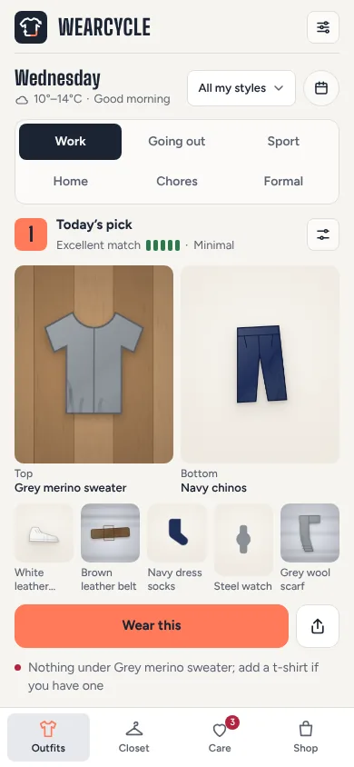
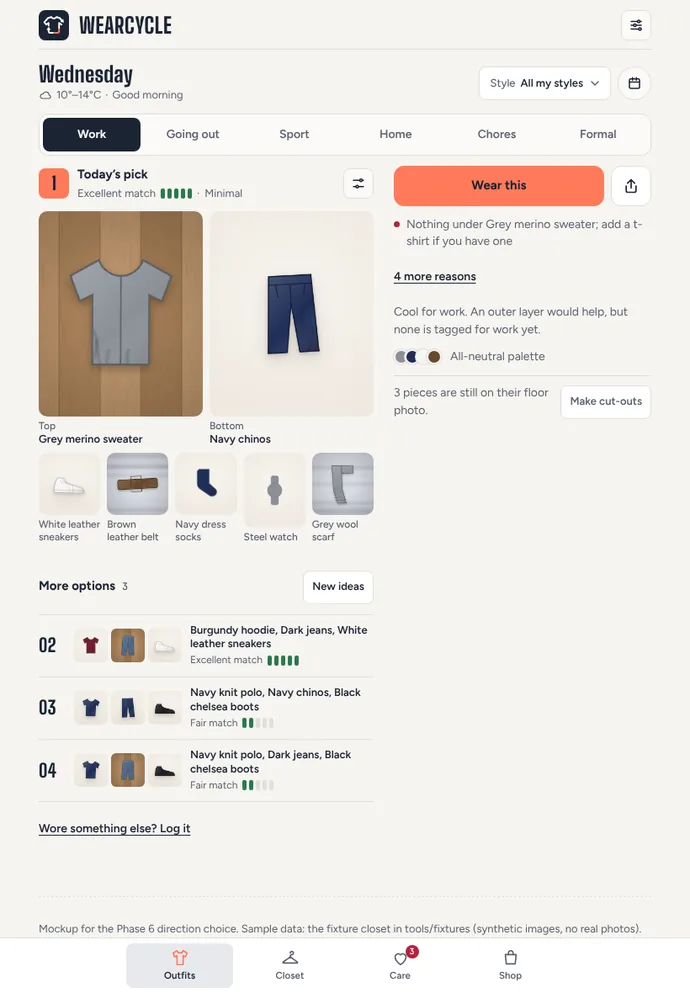
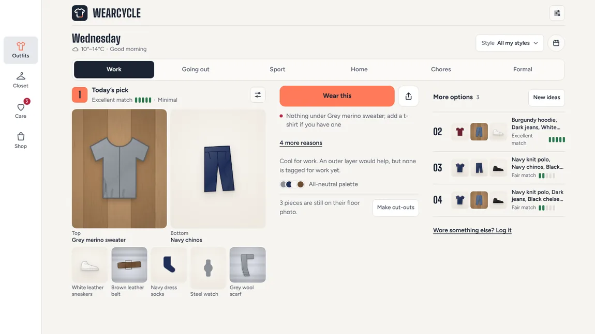
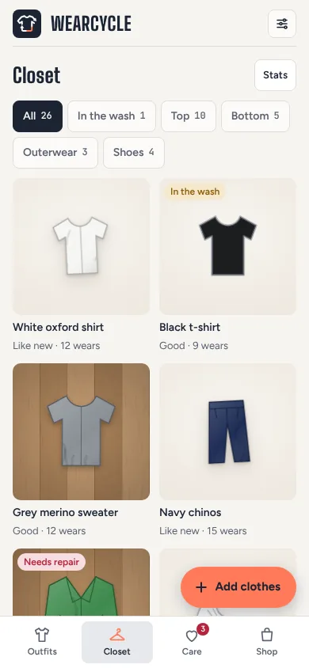
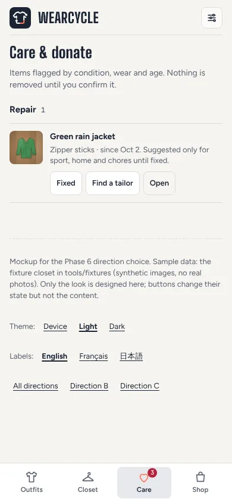
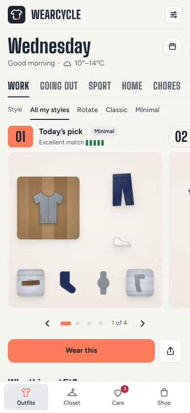
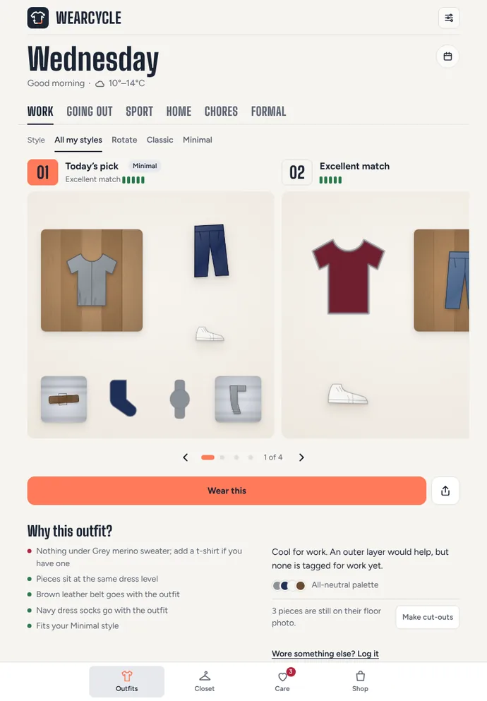
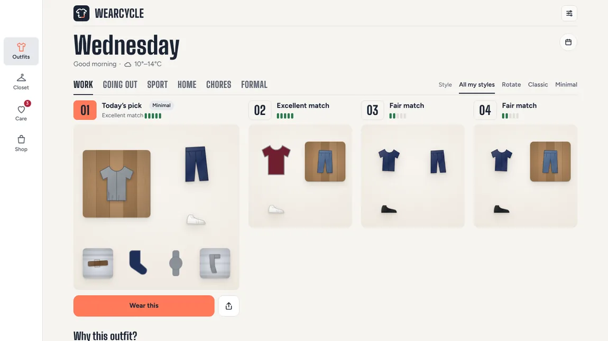
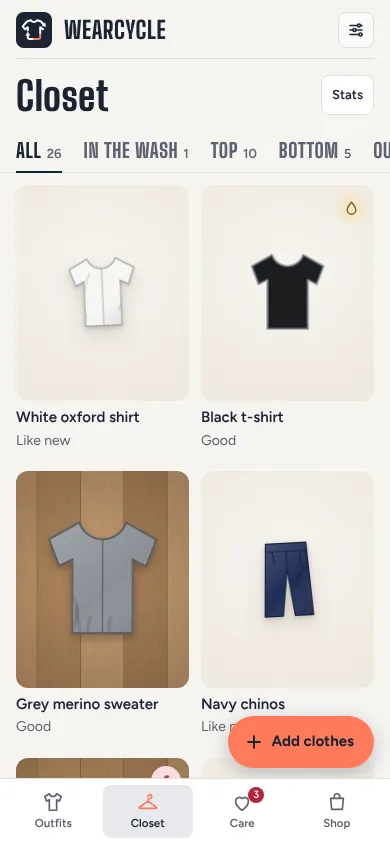
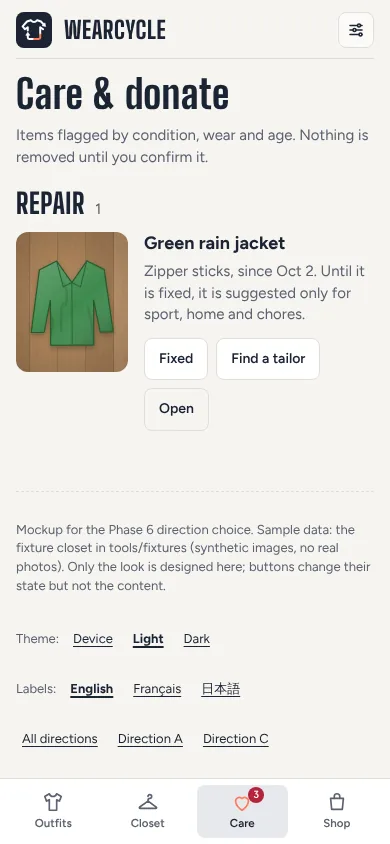
C: Board
Today’s screen, refined: the flat-lay board stays the hero; the occasion moves into a menu.
Open direction C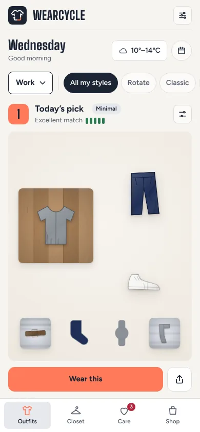
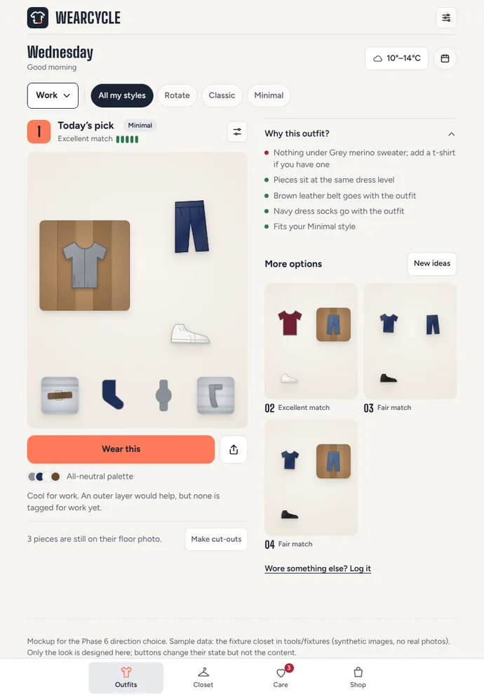
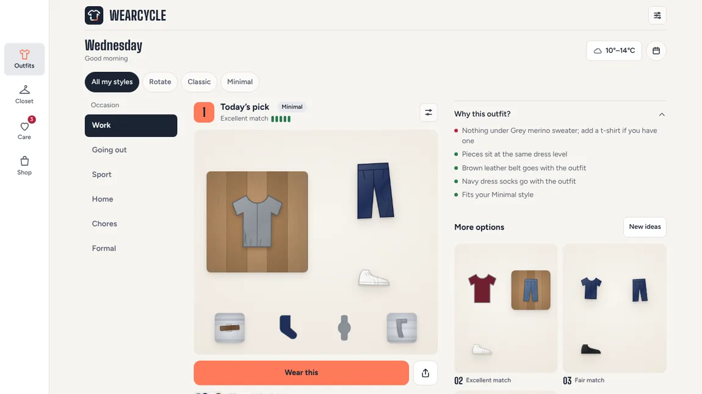
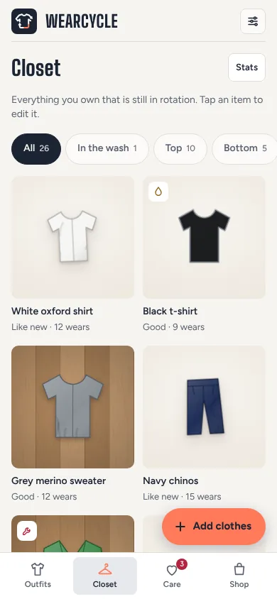
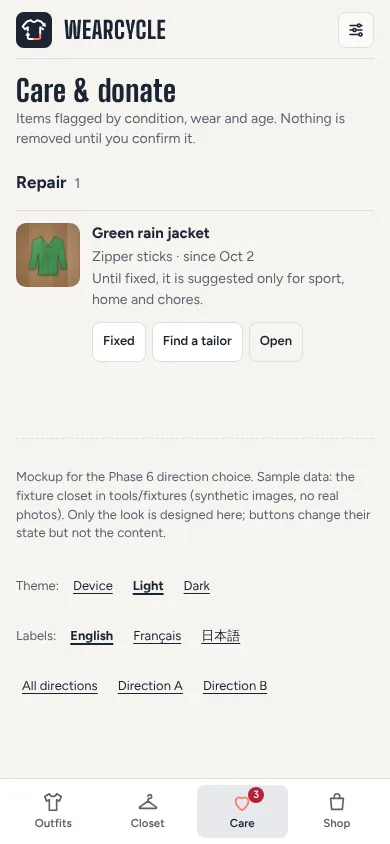
Sample data: the fixture closet in tools/fixtures (synthetic pictures and names, no real photos), with the four Work options the app ranks for it at the fixed clock (Wednesday, 10°–14°C). Only the look is designed: tapping changes selected states, not the content. The navigation shell (bottom bar, rail) is today’s; Phase 7 decides it. Shop is not part of these mockups.